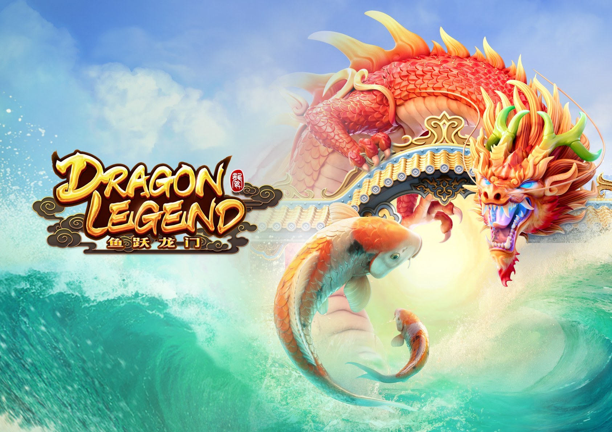

Dragon Legend - RTP, análisis y dónde jugar

| Proveedor | PG SOFT |
|---|---|
| Tipo de juego | Tragamonedas |
| Temática | dragones chinos |
| RTP | Varía según el casino (ver FAQ) |
| Móvil | Sí |
Overview
Entra en dragones chinos con Dragon Legend, un tragamonedas de PG SOFT hecho para jugar rápido en el móvil.
Pequeños detalles en el diseño hacen que cada ronda se sienta fresca.
Vale unos giros si la temática te llama la atención.
Dónde jugar Dragon Legend
Dragon Legend está disponible en casinos en línea que ofrecen juegos de PG SOFT. Empieza con nuestros tops analizados:
Nigeria | Brasil | México | Kenia | Sudáfrica | Colombia | India
Preguntas frecuentes sobre Dragon Legend
¿Cuál es el RTP de Dragon Legend?
PG SOFT lanza Dragon Legend con varias configuraciones de RTP, y cada casino elige una de ellas. La cifra exacta puede variar entre casinos. Para comprobarla, abre la información del juego o la tabla de pagos dentro del juego en el casino donde juegues.
¿Puedo jugar a Dragon Legend gratis?
Muchos casinos en línea te permiten probar Dragon Legend en modo demo sin depositar. Elige un casino de nuestros tops y busca la opción demo o juego gratis si quieres probar el juego primero.
¿Dónde puedo jugar a Dragon Legend con dinero real?
Dragon Legend está disponible en casinos que ofrecen juegos de PG SOFT. Nuestros tops cubren Nigeria, Brasil, México, Kenia, Sudáfrica, Colombia e India, y solo incluyen operadores que analizamos.
¿Dragon Legend funciona en el móvil?
Sí. PG SOFT diseña sus juegos pensando primero en el móvil, así que Dragon Legend funciona sin problemas en el navegador de teléfonos y tabletas, sin descargar nada.